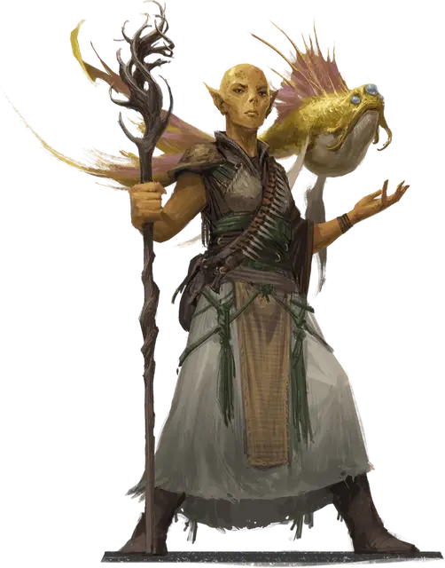

Гитъянки-ксеномант
Githyanki Xenomancer
Средний Гуманоид (Гит, Друид), любое мировоззрение

Класс Доспеха 14
Хиты 157 (21к8 + 63)
Скорость 30 футов
| мод | спас | ||
|---|---|---|---|
| СИЛ | 14 | +2 | +2 |
| ЛОВ | 18 | +4 | +8 |
| ТЕЛ | 17 | +3 | +7 |
| мод | спас | ||
|---|---|---|---|
| ИНТ | 15 | +2 | +2 |
| МДР | 18 | +4 | +8 |
| ХАР | 13 | +1 | +1 |
Навыки Восприятие +8, Выживание +8, Природа +6, Уход за животными +8
Чувства пассивное Восприятие 18
Языки Гитский
Опасность 9 (5000 опыта)
Бонус мастерства +4
Особенности
Языки. Знает Гитский и любые другие четыре языка.
Действия
Мультиатака. Гитъянки совершает три атаки Посохом или Телекинетическим снарядом, или любой их комбинацией.
Посох. . Рукопашная атака оружием: +6 к попаданию, досягаемость 5 фт., одна цель. Попадание: 5 (1к6 + 2) дробящего урона, или 6 (1к8 + 2) дробящего урона, если используется двумя руками, плюс 14 (4к6) урона психической энергией.
Телекинетический снаряд. . Дальнобойная атака заклинанием: +8 к попаданию, дистанция 60 фт., одна цель. Попадание: 20 (3к10 + 4) урона силовым полем.
Использование заклинаний (псионика). Базовой характеристикой гитъянки является Мудрость (Сл спасброска от заклинаний 16). Он может накладывать следующие заклинания, не нуждаясь ни в каких компонентах:
• Неограниченно: волшебная рука [mage hand] (рука невидима), искусство друидов [druidcraft], свет [light];
• 2/день каждое: бесследное передвижение [pass without trace] (только на себя), невидимость [invisibility] (только на себя);
• 1/день каждое: подчинение чудовища [dominate monster], телекинез [telekinesis], узилище [forcecage], уход в иной мир [plane shift].
Бонусные действия
Астральный шаг (перезарядка 4–6). Гитъянки телепортируется вместе со всем снаряжением, которое он несёт или носит, в свободное пространство в пределах 30 футов, которое он может видеть.
Реакции
Парирование. Гитъянки добавляет 3 к КД против одной рукопашной атаки, которая должна попасть по нему. Для этого он должен видеть атакующего, и должен использовать рукопашное оружие.
Описание
Гитъянки-ксеномант путешествует по самым дальним уголкам Дикого космоса и Астрального моря, даже иногда посещая миры Материального плана, для изучения и каталогизации невиданных им ранее существ. При дружелюбном контакте с разумными существами дипломатические навыки ксеноманта выходят на первый план. Враждебное же столкновение служит проверкой его навыков выживания.
Порой исследования ксеноманта требуют захвата и заключения особи (для исследования поведения), или её умерщвления и препарирования (для изучения или извлечения внутренних органов). Большинство ксеномантов предпочитают заниматься такой работой в своих лабораториях на Астральном плане.
Гитъянки
Гитъянки — потомки древнего народа, который также является прародителем гитцерай. Этот высокий сухопарый народ обладает мощными псионическими способностями. По большей части, они населяют Астральный план. Наиболее хорошо среди гитъянки известны последователи королевы-лича Влаакит. Они держат в страхе весь Астральный план, совершая набеги в Дикий космос ради кражи богатств и магии Мультивселенной.